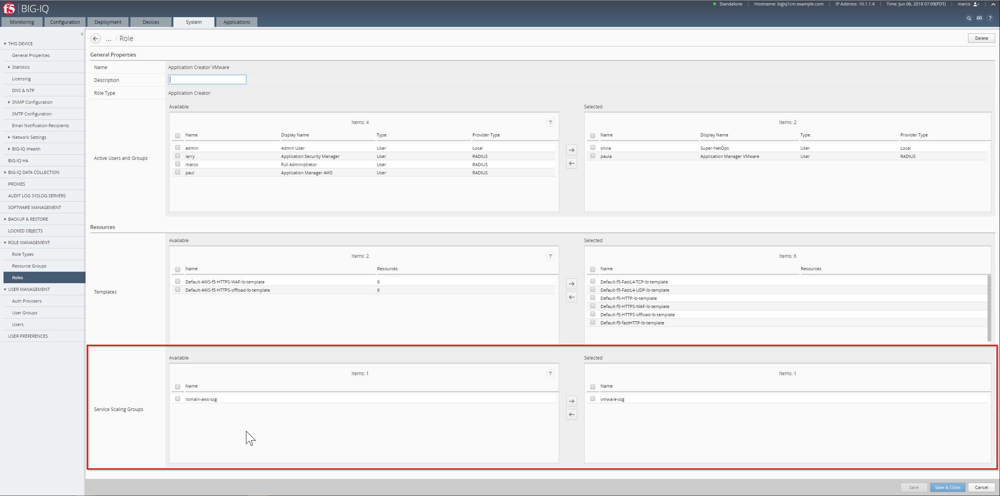

F5 BIG-IQ & Cloud Edition Lab > Class 2: BIG-IQ Deployment with auto-scale on AWS, Azure & VMware (Cloud Edition) > Module 1: Setup a Service scaling group (SSG) in VMWARE Source | Edit on
Lab 1.3: Deploy your Service Scaling Group¶
Before setting up our SSG and deploy it, do the following:
Note
it is recommended to launch your SSH sessions from the UDF portal.
Open 2
SSHsessions on yourBIG-IQ.On the first
SSHsession, run the following command:tail -f /var/log/restjavad.0.log | grep vmwareOn the second
SSHsession, run the following command:tail -f /var/log/orchestrator.log
Note
Keep those sessions open until the end of the class.
Connect via
SSHto the system Ubuntu Lamp Server and run the command:sudo service isc-dhcp-server statusif you see something like this:
f5@03a920f8b4c0410d8f:~$ sudo service isc-dhcp-server status isc-dhcp-server stop/waiting
then run the command:
sudo service isc-dhcp-server startotherwise (to be safe), run the command:
sudo service isc-dhcp-server force-reload
From UDF, launch a Console/RDP session to have access to the Ubuntu Desktop. To do this, in your UDF deployment, click on the Access button of the Ubuntu Lamp Server system and select Console or XRDP

If you are using Ravello, select the Ubuntu Lamp Server and click on Console:

You can use the copy/past feature if you are using the Console:

Note
You may have a QWERTY keyboard for the password, keep this in mind
Launch Chrome and click on the vSphere Web Client bookmark.

Use the following credentials:
login: administrator@vsphere.local
password: Purpl3$lab

Note
the login/authentication takes a bit of time.
Once logged in, click on the VMs and Templates button to see the list of VMs and folder.

In the previous lab, in our Cloud environment, we specified a VM template called BIGIP-13.1.0.5-0.0.5.ALL_1SLOT_template. You can see that it is listed here.
This template will give us the required information to deploy the VEs related to
our SSG:
Nb of vCPUs
Amount of memory allocated
Disk size and datastore used by this
SSG

Service Scaling Group Setup¶
To deploy your Service Scaling Group (SSG), go to Applications >
Environments > Service Scaling Groups and click the Create button
{kind=link}
Service Scaling Group Properties:
Name : SSGClass2
Cloud Environment: select SSGClass2VMWAreEnvironment
Minimum Device(s) Required: 2
Desired Number of Device(s): 2
Maximum Device(s) Required : 3
Maximum Application(s) Allowed: 3
Note
[New 6.0.1] SSG can be used along with an Access Group. APM module will need to be provisioned in the device template and proper license pool will need to be configure. The access group to use need to be specified in the SSG configuration.

Warning
In UDF, the provisioning of a SSG VE may take up to 10 min. So it may takes up to 20 min to build those 2 devices. If you are short on time, it may be better to specify 1 minimum device and 1 desired device instead of 2.

Let’s review those parameters.
Minimum Device(s) Required : specify how many BIG-IP VE(s) should always be available at any time
Desired Number of Device(s): specify the ideal number of BIG-IP VE(s) should be available when no scale-out scenario is triggered
Maximum Device(s) Required: specify the maximum number of BIG-IP VE(s) that can be created in this SSG. The purpose is to make sure that under some scenarios (like being DDOS), we won’t add constantly new devices
Maximum Application(s) Allowed: specify how many applications we will be able to deploy on top of this SSG. The idea is to ensure that if we use a Cloud edition VE, we won’t try to go over the license limit
Load-Balancer:
Devices: Select the already discovered BIG-IPs BOS-vBIGIP01.termmarc.com and BOS-vBIGIP02.termmarc.com

The device(s) we select here will behave as our Service Scaler devices. They will load
balance the traffic aimed at this SSG.
Scaling Rules:
Scale-Out: Select Throughput(In) Greater than 20 Mbps
Scale-In: Select Troughput(In) Less than 5 Mbps

Here we define our threshold to scale-in/scale-out.The cooldown period
mentions an interval where we don’t do any scaling. The idea is to see how
the situation evolves after a scale-in scale-out event.
Click on Save & Close and your SSG will start being provisioned.
In order to allow Paula to use the SSG previously created, go to : System > Role Management > Roles and select CUSTOM ROLES > Application Roles > Application Creator VMware role (already assigned to Paula). Select the Service Scaling Groups SSGClass2, drag it to the right.
{kind=link}
Click on Save & Close
Go to the next lab to see how to troubleshoot/monitor your SSG Deployment.